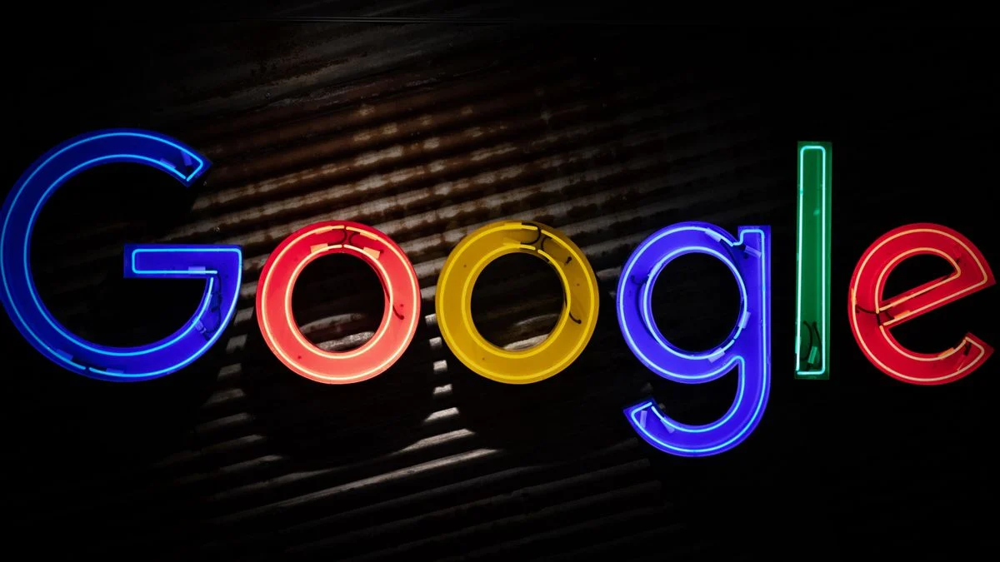
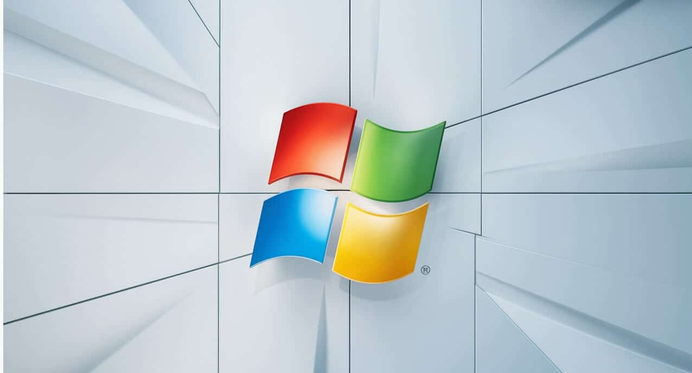

sobre mim e meus projetos:
- 

- 

APRESENTAÇÃO
Olá, meu nome é Aiden pearce. Sou engenheiro de software e tenho mais de 37 anos de experiência no desenvolvimento de soluções tecnológicas inovadoras e robustas. Ao longo da minha carreira, me especializei em sistemas distribuídos, segurança cibernética e inteligência artificial e aqui estão todos projeto que fiz e idealizei.
Um dos meus maiores projetos que eu já idealizei, a Google que organiza as informações disponíveis no mundo e torná-las acessíveis e úteis para todas as pessoas.
BLOOKET
O projeto que mais me orgulho de ter feito foi o Blooket, Ele é uma plataforma online de jogos educacionais que combina perguntas e respostas com a emoção dos jogos. A ferramenta é utilizada por professores para criar quizzes interativos e aumentar o engajamento dos alunos.
WINDOWS
O Windows é um sistema operacional desenvolvido por mim que controla o funcionamento de um computador. É um dos sistemas operacionais mais utilizados no mundo.
YOUTUBE
YouTube é uma plataforma de vídeos online. Por meio dela, usuários podem assistir, criar e compartilhar vídeos pela internet. Fundada em 2005, a plataforma possui mais de um bilhão de usuários pelo mundo. A ideia do YouTube é que seus usuários possam não apenas consumir conteúdos na plataforma, mas também produzi-los.UNITY
Unity é uma plataforma de desenvolvimento de jogos e aplicativos interativos em 3D e 2D. É também conhecida como game engine ou motor de jogo. Ela é usado para criar jogos para dispositivos móveis, PC, consoles, TVs, realidade virtual (VR), realidade aumentada (AR) e web.